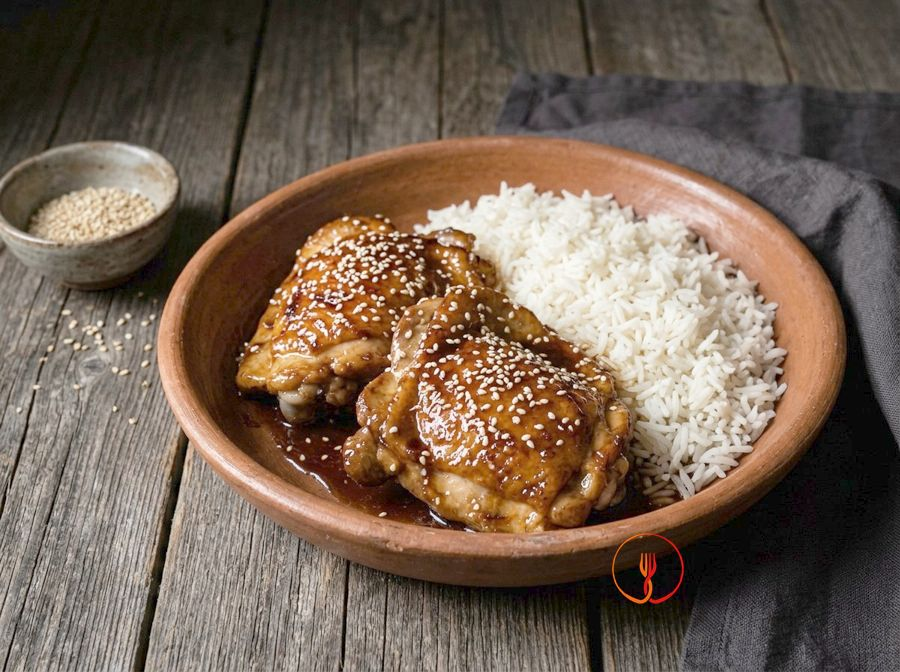

Teriyaki chicken
Sweet and savory glazed chicken with steamed rice.
Ingredients
- Chicken thighs (boneless, skin-on)600 g
- Basmati rice300 g
- Soy sauce (traditional)70 g
- Mirin50 g
- Granulated sugar15 g
- White sesame seeds10 g
- Peanut oil15 g
- Fresh grated ginger10 g
- Fine salt (for rice)8 g
Allergens
Peanuts, Gluten, Sesame, Soy
May contain traces of: Sulphites.
Method
- Rinse the basmati rice under cold running water until the water runs clear to remove excess starch.
- Cook the rice in 450 ml of lightly salted water using the absorption method: bring to a boil, cover, and simmer on lowest heat for 10-12 minutes without lifting the lid.
- In a bowl, whisk together the soy sauce, mirin, sugar, and grated ginger until the sugar is completely dissolved.
- Thoroughly pat the chicken skin dry with paper towels and cut the thighs into uniform 3 cm bite-sized pieces.
- Heat a large pan or wok with peanut oil over medium-high heat; once shimmering, place the chicken skin-side down.
- Sear the chicken for 5-6 minutes without moving it too much, until the skin is golden and crispy.
- Turn the chicken pieces over, cook for another 2-3 minutes, and blot any excess fat released in the pan with paper towels.
- Pour the teriyaki mixture into the pan and reduce over high heat for 2-4 minutes, tossing the chicken until fully coated in a glossy, thick glaze.
- Toast the sesame seeds in a separate small pan for 1 minute until lightly golden.
- Serve the hot chicken over the bed of basmati rice, garnishing with the toasted sesame seeds.
Nutrition facts (estimate)
| Per serving (380 g) | Per 100 g | |
|---|---|---|
| Energy | 2810 kJ / 669 kcal | 739 kJ / 176 kcal |
| Protein | 34 g | 9.0 g |
| Carbohydrates | 72 g | 19 g |
| of which sugars | 10 g | 2.8 g |
| Fat | 27 g | 7.1 g |
| of which saturates | 6.9 g | 1.8 g |
| Fibre | 1.4 g | 0.4 g |
| Salt | 4.6 g | 1.2 g |
AI estimates based on average CREA / USDA data: indicative only, not a substitute for medical or dietitian advice.
Open the recipe in the app for the shopping list, ingredient sheets and nearby shops.